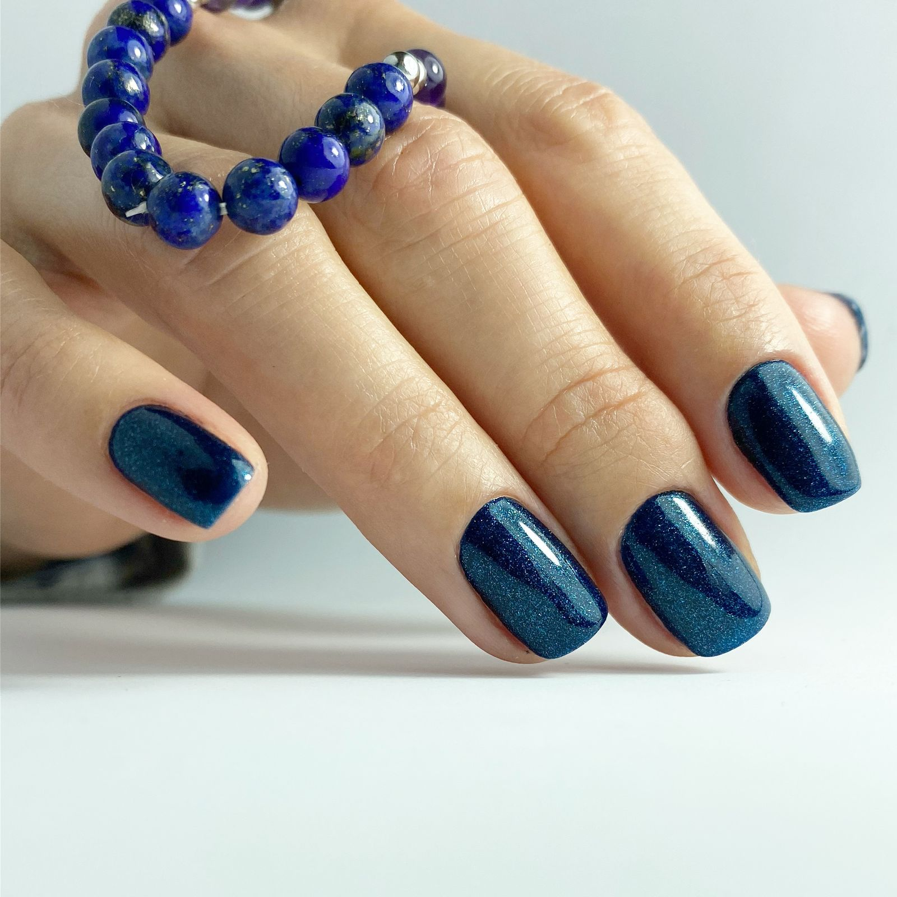
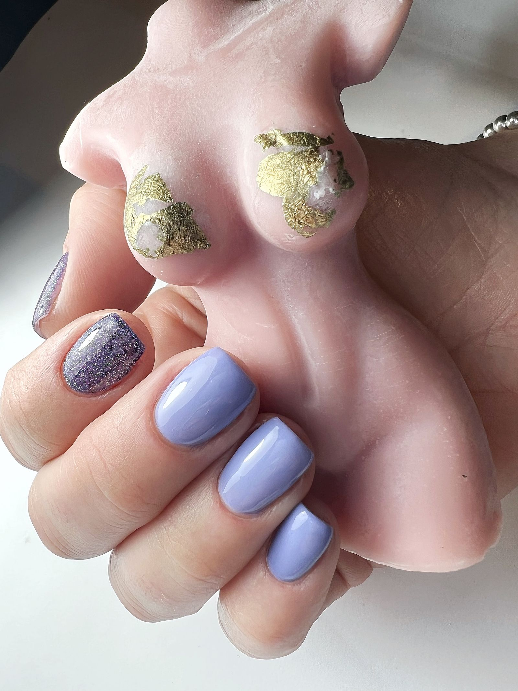
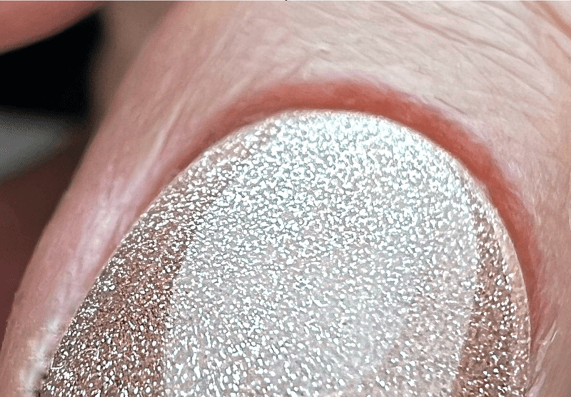

Simple finish
File & polish
Natural nails are shaped and finished with regular polish. A concise appointment when full cuticle work is not required.
Manicure treatments in Hampton
Meticulous preparation, natural-looking finishes and high-quality products, delivered one-to-one in a calm private studio.

Care for natural nails
Every treatment is shaped around your natural nails, preferred finish and the condition they are in today. The aim is simple: neat, healthy-looking hands and a result that feels polished without feeling overdone.
Real work
Each image comes from the corresponding individual treatment page on the original website.


Your appointment
A calm pace, close attention and practical guidance for keeping your nails looking their best between appointments.
Your nails and cuticles are carefully prepared for a clean, lasting finish.
Shape, colour and treatment are chosen around your natural nails and preferences.
You leave with simple advice to help protect the result and support healthy-looking nails.
Helpful to know
A classic manicure is finished with regular polish. A gel manicure uses a cured gel colour for a longer-lasting finish and includes removal when you are having a new application.
Yes. Choose either the gel manicure with removal and a new application, or gel removal with a classic manicure if you do not want new gel colour.
Gel colours used for these appointments are HEMA and TPO free, with a wide selection of shades available in the studio.
Your appointment
Private manicure appointments in Hampton, by appointment only.
Book now